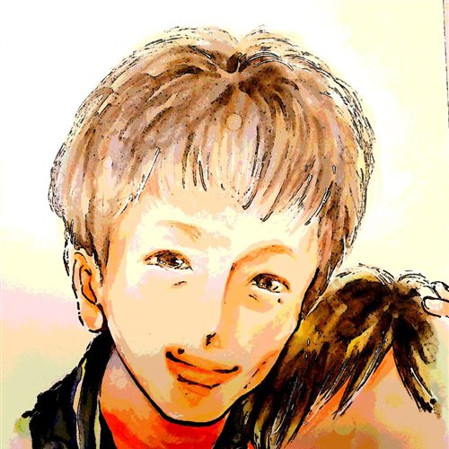

りょうじ🌻
その世界観を、
「選ばれる発信」につなげる
- SNSブランディングとは？
- 選ばれるアカウント設計のコツ
- 差別化と差異化について
世界観 × ブランディング コラボセミナー
「好き」から見つける、自分だけの世界観。
note収益化のプロ｜りょうじ🌻 AIアート×世界観｜そい🌸
オープンチャットから、そのまま参加できます。
For You
Talk
ちゃんと発信している。商品やサービスもある。
でも、「誰から買っても同じ」に
見えてしまう。
りょうじ🌻
その世界観を、
「選ばれる発信」につなげる
そい🌸
自分の「好き」から、
自分だけの世界観を見つける
「なんか好き」から、
「この人にお願いしたい」へ。
うれしい特典を
ご用意しています
当日ご参加くださった方に、お渡しする予定です。
楽しみにしていてくださいね。
Speakers

りょうじ🌻
note収益化のプロ
SNS×noteの
収益化サポーター。
Xフォロワー3万人。
「強みがない」に
向き合ってきました。

そい🌸
AIアート×世界観
AIアートを使って、
「好き」を世界観に。
自分の中にある想いを、
目に見えるカタチへ。
Overview
オープンチャット「そいの世界🌸」から
参加できます。